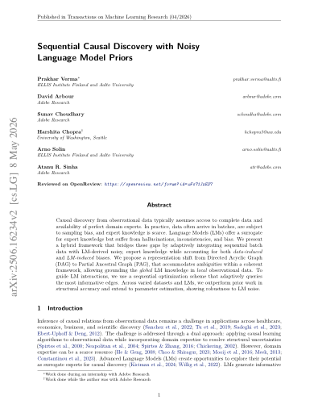
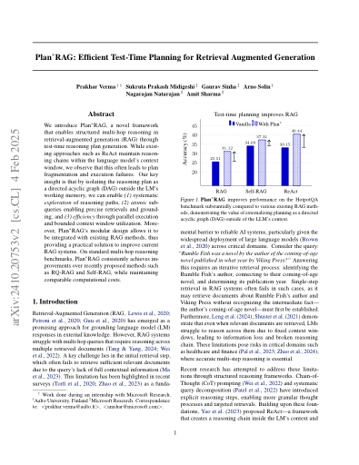
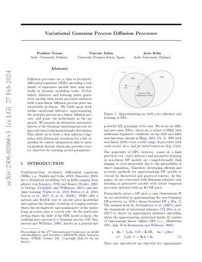
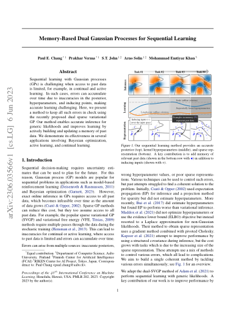
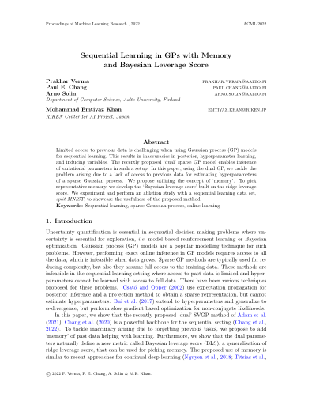
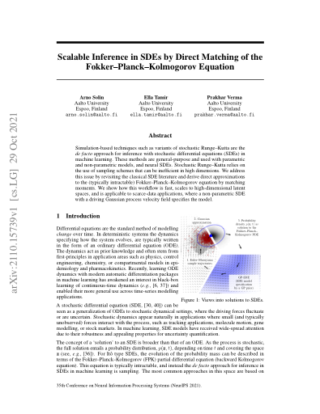

Sequential Causal Discovery with Noisy Language Model Priors
Transactions on Machine Learning Research (TMLR), 2026
I am a Senior Machine Learning Engineer at Inven, where I build reliable, production-scale LLM systems. My work focuses on grounding language models in private, multimodal data, building scalable data pipelines for AI systems, and applying probabilistic machine learning for well-calibrated forecasting and estimation.
I completed my Ph.D. at Aalto University, Finland, under the supervision of Prof. Arno Solin. My experience spans both industry and academia through research roles at Microsoft Research, Adobe Research, and the University of Oxford, with publications at ICML (Oral), NeurIPS, AISTATS, and TMLR.
I am particularly interested in the intersection of probabilistic modeling and agentic systems, with the goal of developing principled, uncertainty-aware agent frameworks grounded in Bayesian principles for evaluation, failure detection and recovery, and decision-making under uncertainty.
See full list on Google Scholar.

Transactions on Machine Learning Research (TMLR), 2026

Workshop on Reasoning and Planning for Large Language Models, ICLR 2025

International Conference on Artificial Intelligence and Statistics (AISTATS), 2024

International Conference on Machine Learning (ICML), 2023 Oral

Continual Lifelong Learning Workshop, ACML 2022 Contributed Talk

Advances in Neural Information Processing Systems (NeurIPS), 2021
Prakhar Verma (2026). Scalable Probabilistic Inference for Sequential Stochastic Models. Doctoral dissertation, Department of Computer Science, Aalto University, Finland.
Prakhar Verma (2021). Sparse Gaussian Processes for Stochastic Differential Equations. Master's thesis, Department of Computer Science, Aalto University, Finland.
Prakhar Verma (2016). Development of Automated GIS Tools on Various Platforms. Bachelor's thesis. Uttarakhand Technical University, India. In collaboration with TomTom India.